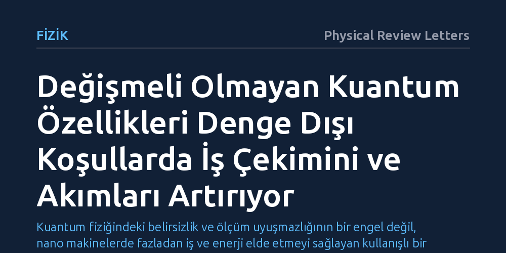

FIZIK · Physical Review Letters · 2026-10-14
Araştırmacılar, ölçüm sırasının sonucu değiştirdiği kuantum büyüklüklerinin denge dışı termodinamik süreçlerdeki etkisini inceledi. Çalışma, bu uyuşmazlığın enerji ve entropi dengesine ek bir katkı sağlayarak klasik sınırlara kıyasla iş üretimini ve akımları artırdığını ortaya koydu.
Kuantum fiziğindeki belirsizlik ve ölçüm uyuşmazlığının bir engel değil, nano makinelerde fazladan iş ve enerji elde etmeyi sağlayan kullanışlı bir termodinamik kaynak olduğunu gösterir.

Klasik fizikte ve günlük deneyimlerimizde ölçüm sırasının bir önemi yoktur; bir odanın önce sıcaklığını sonra basıncını ölçseniz de aynı sonuçları elde edersiniz. Ancak atom altı parçacıkların dünyasına girdiğimizde kuantum mekaniğinin temel bir kuralıyla karşılaşırız: İki farklı fiziksel özelliği ölçme sıranız, sistemin kuantum durumunu geri dönülmez şekilde değiştirir. Fizikte 'değişmeli olmama' ya da teknik adıyla 'Abelian olmama' olarak bilinen bu durum, Heisenberg belirsizlik ilkesinin de merkezinde yer alır.
Araştırmacıların peşine düştüğü temel soru, bu ölçüm sırası uyuşmazlığının termodinamik süreçleri nasıl etkilediğidir. Korunan fiziksel büyüklüklerin birbiriyle uyuşmadığı kuantum sistemleri dış bir etkiyle sürülüp ısıl dengeden uzaklaştırıldığında, enerjinin korunumu ve entropi artışı gibi en temel yasalar nasıl davranır? Bu sorunun cevabı, nano ölçekli termodinamik süreçlerin işleyişini ve moleküler düzeydeki enerji sınırlarını anlamak açısından önem taşımaktadır.
Araştırmacılar bu soruyu yanıtlamak için laboratuvar ortamında fiziksel bir deney yürütmek yerine, açık kuantum sistemleri teorisi ve kuantum istatistiksel mekaniğin matematiksel yöntemlerine başvurdu. İncelenen modelde, sınırlı sayıda serbestlik derecesine sahip bir kuantum sistemi, kendisinden çok daha büyük bir ısıl banyoya bağlandı ve dışarıdan uygulanan bir kuvvetle sürekli sürülerek durağan dengeden uzaklaştırıldı.
Ekip, mikroskobik ölçekte geçerli olan denge dışı dalgalanma bağıntılarını ve dinamik olasılık yapılarını kullanarak enerjinin ve entropinin zaman içindeki değişimini adım adım türetti. Birbiriyle uyuşmayan korunumlu büyüklüklerin yarattığı etkileri kuantum düzeyinde inceleyen bu analitik yaklaşım, klasik termodinamik kabullerinin ötesine geçen genelleştirilmiş yasa ifadelerinin matematiksel olarak elde edilmesini sağladı.
Analizin ortaya koyduğu temel bulgu, değişmeli olmayan büyüklüklerin enerji ve entropi dengesine daha önce tanımlanmamış ek bir katkı sağladığıdır. Araştırmacılar, bu yeni kuantum bileşeni denklemlere dahil edilmediğinde termodinamiğin birinci ve ikinci yasalarının ihlal edilmiş gibi göründüğünü kanıtladı. Başka bir deyişle, ölçüm sırasının yarattığı kuantum uyuşmazlığı, sisteme özgü yeni bir termodinamik terim ortaya çıkarmaktadır.
Bu ek katkının pratik sonucu ise enerji dönüşümünde ortaya çıkmaktadır. Türetilen denklemler, uyuşmayan büyüklüklerin oluşturduğu kuantum yapısının, sistemden çevreye aktarılabilecek yararlı iş miktarını ve denge dışı akımları belirgin biçimde artırdığını gösterdi. Bu durum, klasik termodinamikte elde edilebilen sınırların üzerine çıkılabileceğine işaret etmektedir.
Elde edilen sonuçlar, kuantum fiziğindeki ölçüm uyuşmazlığına dair yaygın bakış açısını değiştirmektedir. Geleneksel olarak ölçümlerde belirsizlik ve deneysel sınırlama getirdiği düşünülen bu özellik, uygun biçimde yönlendirildiğinde iş üretimini artıran somut bir yakıta dönüşebilmektedir. Yazarların belirttiği gibi 'değişmeli olmama durumu potansiyel olarak değerli bir termodinamik kaynaktır.'
Bu kuramsal çerçeve, gelecekte tekil atomlar veya moleküller düzeyinde çalışacak nano motorların ve kuantum ısı makinelerinin tasarımına rehberlik edebilir. Bununla birlikte çalışma tamamen teorik türetimlerden oluştuğundan, söz konusu avantajın çevresel gürültü ve kayıpların bulunduğu gerçek laboratuvar koşullarında ne ölçüde korunabileceği henüz deneysel olarak gösterilmeyi beklemektedir.